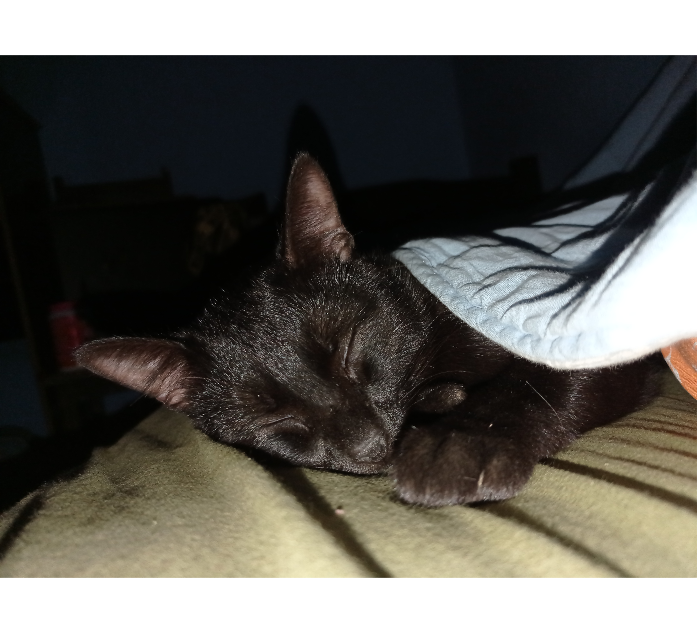
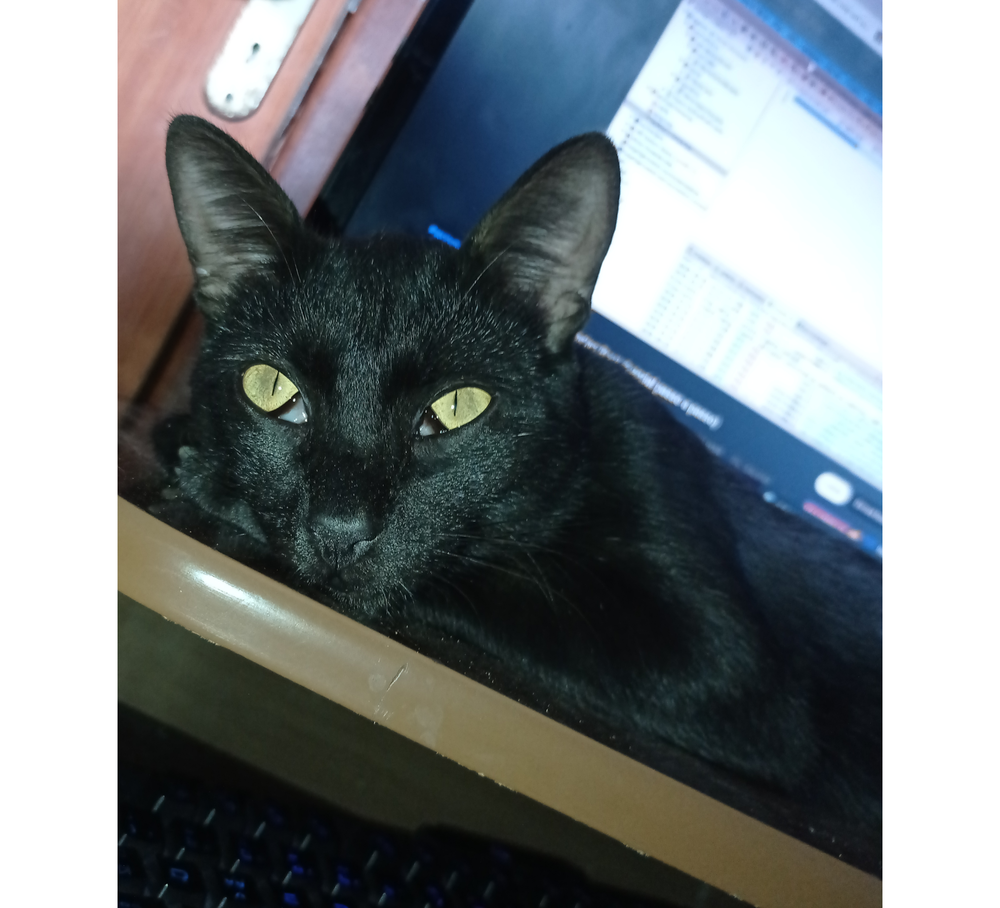
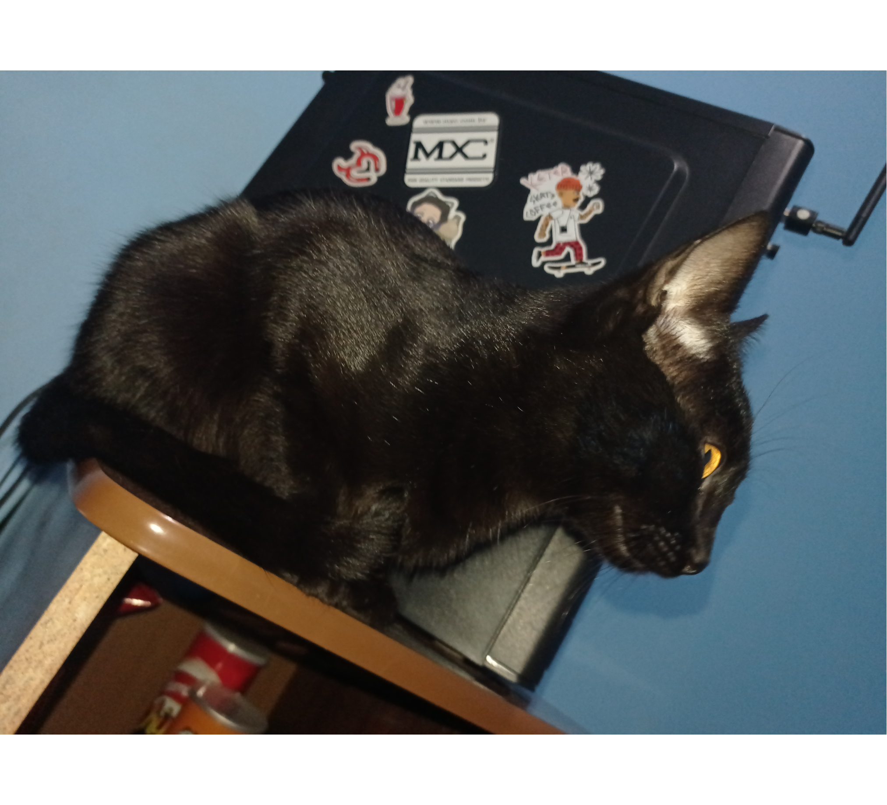

Nero e o menorzinho dos gatos, muito calminho, e muitoooo antissocial kk gostar de ficar com ninguém além de mim, mas também muito carente, quer ficar no colo o tempo todo, muito marrento também, é pequeno mas senta o tapa nos irmão o tempo todo. Fica com a cara fechada o tempo todo, parecido com salem. Inclusive tem umas suspeitas que ele seja filho de Salem, eles são muito parecidos, a personalidade deles é quase idêntica, a única coisa que muda é que Nero é muito pequeno comparado com Salem e Nero não sai nem um pouco de casa.
Nero era dos vizinhos aqui de frente da minha casa. Tinha pouco mais de um mês que Yuki estava aqui em casa. Nisso Nero veio aqui em casa uma vez e conheceu Yuki, eles tinham praticamente a mesma idade. Acabou que Nero estava o tempo todo aqui em casa (realmente o tempo todo, sempre levava ele para lá e na mesma hora já estava aqui novamente), atravessava a rua, pulava o portão, e ficava aqui brincando com Yuki. Nisso nós acabamos apegando a ele e fizemos a melhor escolha, e pediu a ex-dona dele para ficarmos com ele.
Nero era dos vizinhos aqui de frente da minha casa. Tinha pouco mais de um mês que Yuki estava aqui em casa. Nisso Nero veio aqui em casa uma vez e conheceu Yuki, eles tinham praticamente a mesma idade. Acabou que Nero estava o tempo todo aqui em casa (realmente o tempo todo, sempre levava ele para lá e na mesma hora já estava aqui novamente), atravessava a rua, pulava o portão, e ficava aqui brincando com Yuki. Nisso nós acabamos apegando a ele e fizemos a melhor escolha, e pediu a ex-dona dele para ficarmos com ele.

O nome 'Nero' veio de um passarinho do anime Black Clover (mais a frente eu descobri que não era apenas um passarinho). Uma coisa legal e que poucos dias antes de eu conhecer o meu Nero eu tinha falado com uma colega que tinha gostado muito desse passarinho do anime, e que queria um gato novo para por esse nome nele kk, logo depois uns 2/3 dias, aparece uma bolinha preta que ficava brincando pra todo canto com Yuki. Um detalhe interessante, no mesmo anime, Black Clover, tem um personagem (o protagonista que se chama 'Asta'), as características do Asta é: um garoto baixinho todo musculoso e muito invocado que sai batendo em todo mundo. E isso descreve exatamente o meu Nero kk enquanto a única coisa parecida entre o meu Nero e o do anime e a cor preta.
Características: Nero é muito pequeninho, com a pelagem toda preta, não tem muito pelo, mas ainda tem mais que Yuki. Ele é extremamente muito marrento e invocado, qualquer coisa ele senta o tapa nos irmãos, ciumento, muitoo antissocial também, muito difícil dele chegar em outra pessoa além de mim, outra coisa e que ele é bem curioso qualquer coisa diferente ele ta em cima olhando. Ele dorme muito, e não gosta muito de sair de casa.
Obs: O nome no topo da página está caracterizado de acordo com as características físicas dele.
Características: Nero é muito pequeninho, com a pelagem toda preta, não tem muito pelo, mas ainda tem mais que Yuki. Ele é extremamente muito marrento e invocado, qualquer coisa ele senta o tapa nos irmãos, ciumento, muitoo antissocial também, muito difícil dele chegar em outra pessoa além de mim, outra coisa e que ele é bem curioso qualquer coisa diferente ele ta em cima olhando. Ele dorme muito, e não gosta muito de sair de casa.
Obs: O nome no topo da página está caracterizado de acordo com as características físicas dele.


